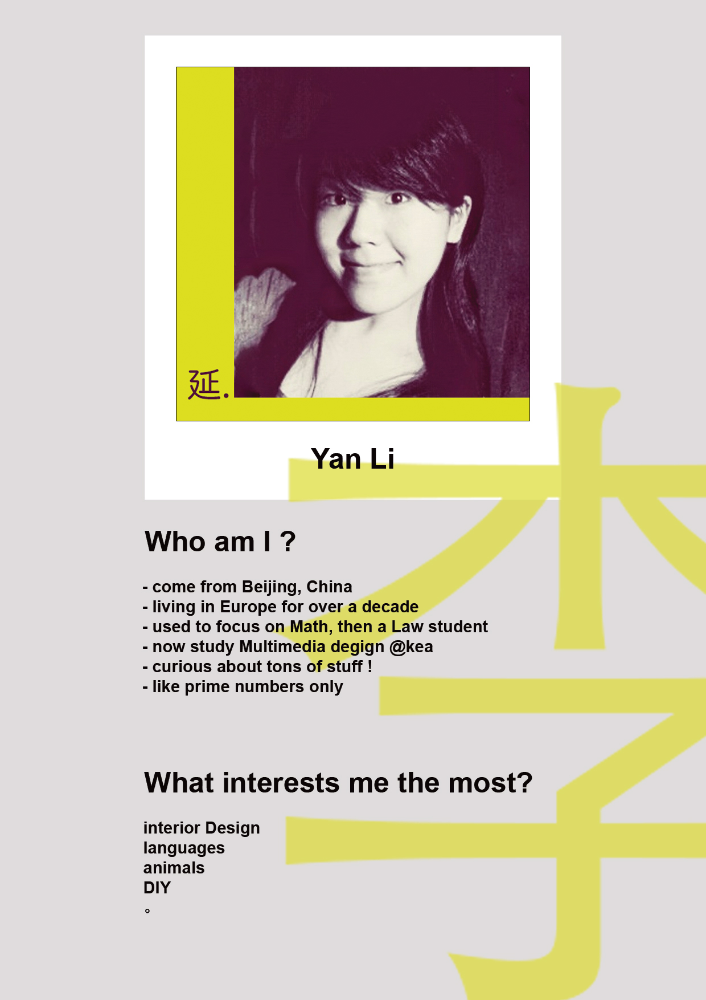

A bit about Me & this site
My name is Yan Li, 李延. I am from Beijing, China.
I just finished my first semester as Multimedia Design student at KEA.
I already knew a bit about web development before this study, mostly self-taught, so I started this education in the hope that I could gain a more sysmatic understanding of this field, which I did.
My focus, as you could see from this portfolio site, is mainly on Javascript and animation. Design and user testing are also very interesting topics for me.